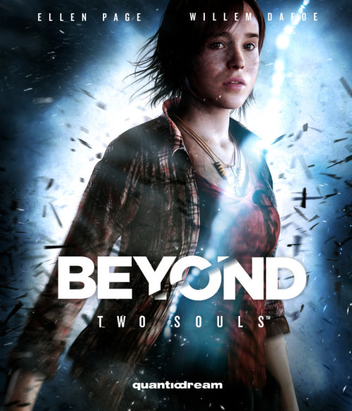

Sinopsis

Jodie Holmes (Elliot Page) nació con un don especial: ha vivido toda su vida vinculada a una entidad llamada Aiden, un ser inmaterial con poderes telequinéticos que además hizo que Jodie tuviera contactos con el mundo de los espíritus. Desde que nació, esto le ha supuesto tener una vida muy diferente a la de cualquier otra persona.
La historia narra la vida de Jodie en tres etapas:
infancia, adolescencia y juventud.
nota durante la primera observamos a Jodie en la base científica del doctor Nathan Dawkins (Willem Dafoe),
en la segunda los problemas que le ocasiona a Jodie para integrarse y vivir una vida normal, y en la última su ingreso en las fuerzas especiales de la CIA, que valora el potencial que posee Jodie al controlar una entidad,
y su posterior deserción lo que la lleva a ser perseguida por todas las fuerzas policiales del país.
Protagonistas
Jodie Holmes: Protagonista del videojuego y sobre el que gira la trama de la historia.
Jodie es una joven que nació unida junto a una entidad que responde al nombre de Aiden.
Nada más nacer, Jodie fue dada en adopción a unos padres de acogida. Posteriormente, siendo Jodie una niña, fue enviada a una base científica para que el doctor Nathan Dawkins investigara cuál era el misterioso don que poseía.
La historia narra la vida de Jodie en tres etapas: infancia, adolescencia y juventud.
Aiden: La misteriosa entidad que convive junto a Jodie, Aiden es un ser incorpóreo e inmaterial que vive unido a Jodie.
Aiden puede interactuar con su entorno, tomar posesión del cuerpo de otras personas o incluso de privarlas de aire hasta llegar a matarlas.
Debido a que ha convivido junto a Jodie desde que ella tiene uso de razón, mantiene una relación de amor-odio con él.
Finales
Perseguida por la CIA por deserción, Jodie regresa con el doctor Nathan Dawkins que le propone un acuerdo: a cambio de que destruya un portal hacia el Inframundo obtendrá el perdón de la CIA. Jodie decide aceptar, y junto a Ryan y otros dos compañeros, logran destruir el portal que estaba siendo utilizado por la ficticia República de Kirzistán. Jodie regresa junto a Dawkins, percatándose de que este está obsesionado con el Inframundo. Incapaz de aceptar la muerte de su esposa y su hija, Nathan las mantiene en un limbo inducido para seguir en contacto con sus almas.
Sin embargo, la CIA no tenía pensado cumplir su promesa, y nada más Jodie regresa a la base de la DPA junto a Dawkins, es capturada. El general McGrath le dice que pretenden sumirla en un coma inducido, igual que hicieron con su madre. En ese momento, Dawkins aparece y le dice a Jodie que planea desactivar el campo de contención que separa el mundo de los vivos del Inframundo, de esa forma todas las almas regresarán. Con ayuda de Aiden, Cole y Ryan, Jodie consigue liberarse y acude a detener a Dawkins.
Debido a que Dawkins desactiva el campo de contención, las entidades comienzan a destruir la base y a asesinar a todos los que allí se encuentran. Jodie, Cole y Ryan continúan adelante hasta toparse con el portal. Jodie se cruza de nuevo con Dawkins, que busca desesperadamente a su mujer e hija; Dawkins muere por su propia mano o bien a manos de Ryan si Jodie fue incapaz de convencerlo de que la dejara pasar. Jodie entra en el portal para poder cerrarlo y es entonces cuando Jodie descubre que Aiden era su hermano gemelo, el cual murió durante el parto. A partir de ese instante, el jugador debe decidir si permanecer en el Inframundo con Aiden, o regresar al mundo de los vivos. Si el jugador decide quedarse en el Inframundo, la historia terminará ahí, pero si decide quedarse en el mundo de los vivos, continuará.
Jodie afirma que desde que sucedió lo del portal, ha ido perdiendo la memoria poco a poco. Aiden se quedó al otro lado del portal, y ahora Jodie afirma sentirse más sola que nunca. En el caso de que Cole sobreviviera, Jodie le envía los dibujos que hizo de pequeña; en caso de que muriera, acude a visitar su tumba. Jodie decide que es hora de volver a empezar, y entonces el jugador debe decidir qué conclusión desea para la historia.nota 2
Final malo: Final que se produce si Jodie es incapaz de sellar el portal al Inframundo. La voz de Jodie dice que el Inframundo ha engullido al mundo y que nada ha quedado de él. Las almas de las personas vagan sin rumbo en un mundo sumido en la oscuridad. Jodie se cuestiona en qué pudo fallar, afirmando que está condenada por toda la eternidad a preguntárselo.
Más allá: En el caso de que Jodie decida quedarse en el Inframundo, su cuerpo morirá en el mundo de los vivos, pero su alma permanece al otro lado. Jodie afirma seguir velando desde el más allá por aquellos a los que amó. La acción nos traslada a Zoey, la hija de Martes, que afirma tener voces en su cabeza y visiones de lo que está por venir.
Sola: Jodie acepta que no será capaz nunca de tener una vida normal, por lo que decide vagar por todo el país como un simple vagabundo. En una habitación, Jodie está observando la televisión cuando Aiden escribe en la pantalla: «Sigo aquí».
Zoey: Jodie decide marcharse a vivir con Stan, Martes, Jimmy, Walter y la pequeña Zoey. El grupo consiguió un apartamento al que llega Jodie para vivir con ellos, siendo recibida con los brazos abiertos. Nada más reencontrarse con Zoey, Jodie detecta que la pequeña es especial.
Jay: Jodie decide regresar al rancho de Paul, reencontrándose con Jay y Cory. Jodie y Jay se acuestan juntos una noche, pero cuando Jodie se levanta, Aiden escribe en el espejo: «Sigo aquí».
Ryan: Jodie decide quedarse con Ryan, afirmando que necesita volver a aprender a amar. Se marchan juntos de viaje, llegando en barco a una playa desierta. Cuando Jodie está sola frente al mar, Aiden escribe en la arena: «Sigo aquí».
En el final general, se ve una visión del futuro, donde las entidades del Inframundo han invadido el mundo de los vivos. Jodie (o Zoey en el caso de que no sobreviviera), llega hasta una ciudad donde hay un gran portal hacia el Inframundo, afirmando que es la única que puede detenerlo y que debe prepararse para ello.
Producción y distribución
Quantic Dream anunció por primera vez Beyond: Dos Almas en la conferencia de prensa de Sony en la Electronic Entertainment Expo 2012. Si bien por aquel entonces se sabía poco del videojuego, el actor Elliot Page comentó que el guion del juego es de alrededor de 2000 páginas.[cita requerida]
La composición de la banda sonora corrió a cargo del compositor Normand Corbeil, que murió de cáncer de páncreas el 25 de enero de 2013. Debido a su muerte, Lorne Balfe sustituyó a Corbeil como compositor del juego, pues ya tenía experiencia al componer la banda sonora de Assassin's Creed III. De hecho, el videojuego termina con una mención en memoria de Corbeil justo antes de los créditos finales.
A diferencia de Heavy Rain, el anterior videojuego de la compañía Quantic Dream, Beyond: Dos Almas no se desarrolló con compatibilidad con el sistema de juego PlayStation Move.
Como complemento al juego, se distribuyó una aplicación móvil, llamada Beyond Touch, para iOS y Android. Este sistema permitía jugar a través de un teléfono inteligente o una tableta si estos eran conectados a la consola PlayStation . Además, se lanzó una versión especial con 30 minutos más de argumento y la banda sonora del videojuego.